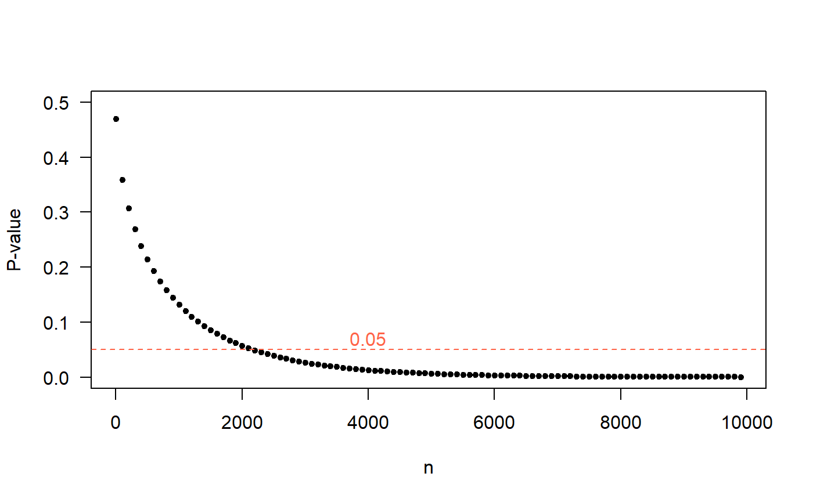
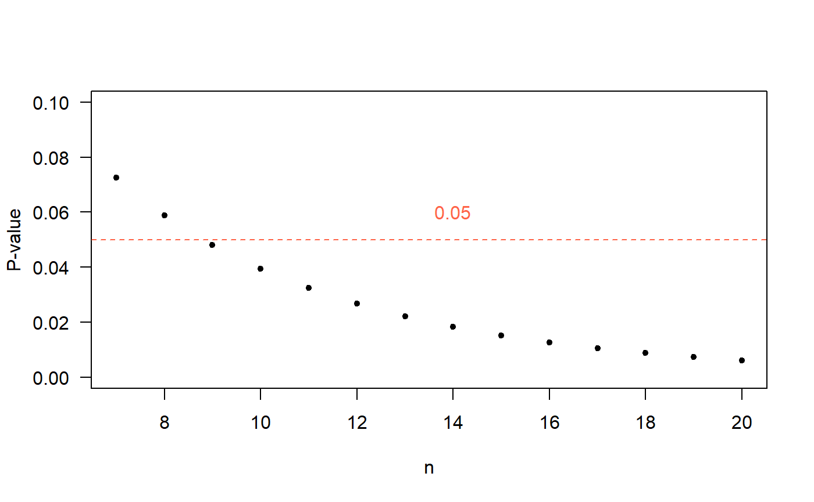
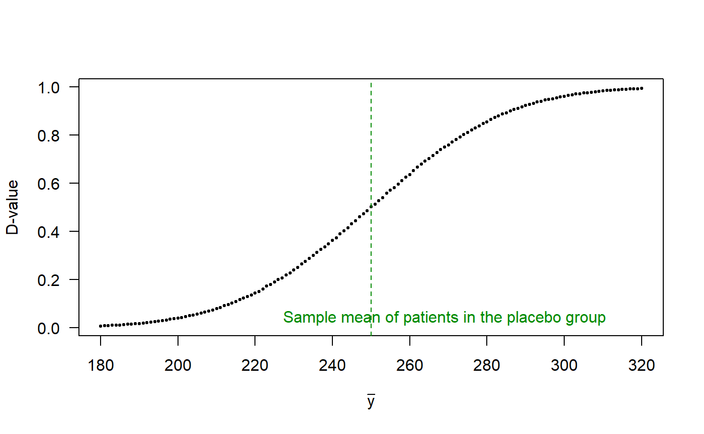

D-value.RmdIn this section we will replicate the example 1 of Demidenko (2016) using the function t_test of the package ‘stests’ as shown below.
require(stests)
t_test(meanx=249, varx=20^2, nx=10000,
meany=250, vary=20^2, ny=10000,
alternative='less', mu=0, var.equal=TRUE)
##
## Two Sample t-test
##
## data: meanx = 249 , nx = 10000 , meany = 250 and ny = 10000
## t = -3.5355, df = 19998, p-value = 0.0002039
## alternative hypothesis: true difference in means is less than 0
## 95 percent confidence interval:
## -Inf -0.5347436
## sample estimates:
## mean of x mean of y
## 249 250The results obtained by the function t_test are the same obtained by Demidenko
In the following figure the P-value is calculated for many values of \(n\), in which it is evident that the P-value decreases and then in \(n=2000\), this parameter is below the level of usual significance of 5%

In this section we will replicate the example 2 of Demidenko (2016) using the function t_test of the package ‘stests’ as shown below.
t_test(meanx=15, varx=6^2, nx=7,
meany=10, vary=6^2, ny=7,
alternative='greater', mu=0, var.equal=TRUE)
##
## Two Sample t-test
##
## data: meanx = 15 , nx = 7 , meany = 10 and ny = 7
## t = 1.559, df = 12, p-value = 0.07248
## alternative hypothesis: true difference in means is greater than 0
## 95 percent confidence interval:
## -0.7160366 Inf
## sample estimates:
## mean of x mean of y
## 15 10We see that the statistics coincide with what is obtained in the article, the value of P within the function t_test is calculated with a \(t\)-student distribution whereas in the article it is obtained through the normal distribution, on the other hand, the size of the sample is small (\(n=6\)) because of this is the difference between the methods.
In the following figure the P-value is calculated for many values of \(n\), in which it is evident that the P-value decreases and then in \(n=9\), this parameter is below the level of usual significance of 5%.

Hypothesis testing:
\[H_0: \mu_1 = \mu_2\]
The alternative hypothesis can be:
\[H_A: \mu_1 < \mu_2\]
\[H_A: \mu_1 \neq \mu_2\]
\[H_A: \mu_1 > \mu_2\]
The function d_meantest presented below is to calculate the D-value by simulation for the case of comparison of two means from normal populations.
require(stests)
args(d_meantest)
## function (meanx, varx, meany, vary, alternative = "less", nrep = 1e+06)
## NULLWe will replicate the example 1 of Demidenko (2016) using the function d_meantest.
d_meantest(meanx=250,meany=249, varx=20^2, vary=20^2, alternative='less')
##
## Two Sample d.test
##
## data: The D-value was calculated using nrep= 1e+06
## d.value = 0.48581
## alternative hypothesis: less
## sample estimates:
## mean of x mean of y
## 250 249We will replicate the example 2 of Demidenko (2016) using the function d_meantest.
d_meantest(meanx=10, meany=15, varx =6^2, vary=6^2, alternative='less')
##
## Two Sample d.test
##
## data: The D-value was calculated using nrep= 1e+06
## d.value = 0.72232
## alternative hypothesis: less
## sample estimates:
## mean of x mean of y
## 10 15To answer this question we will take the data from example 1 of Demidenko (2016), the value of \(x = 249\) will be fixed while the value of \(\bar{y}\) will be moving away from \(\bar{x}\). Recall that the value of \(\bar{y}\) represents the average weight of patients who consumed the drug to lose weight. The value of the sample desviation \(s\) for each group will remain constant at 20 lbs.
The following figure shows the evolution of the D-value as the weight changes \(\bar{y}\) for the group of people who did take the medication.
